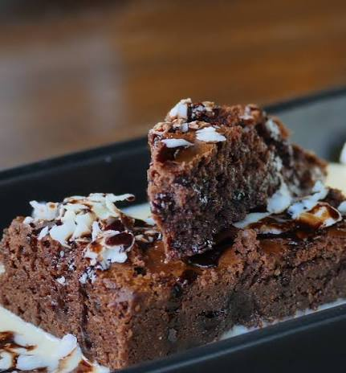

Home
Chocolate cake

Delicious chocolate cake with coconut bits
Greetings! Welcome to my page. Today I Bring you my favourite chocolate cake recipe! It has a velvety dough and a special touch of coconut that makes it irresistible!
Now if you're a sweet tooth like me, you're going to love this cake. Its really easy to do and it's perfect to satisy that craving for chocolate we get!
Ingredients
dough (12 portions)
- 3 eggs
- 1 & a half cups of sugar
- 2 cups of flour
- 1 cup of 50% cocoa powder
- 1/2 cup of cooking oil
- 1 Tbsp of baking powder
- 1 cup of hot water
- desicatted coconut
- a pinch of salt
sauce
- 4 Tbsp of milk
- 1 Tbsp of unsalted butter
- 1/2 cup of 50% cocoa powder
- 1 cup of sugar
Steps
Dough
Time required: 01:00 Hour
- In a mixer, add the eggs and the cooking oil.
- Mix everything until homogenous.
- Then, add the sugar and slowly add the flour while mixing to avoid clumping.
- When everything is mixed, pour the dough in a bowl and add the baking powder and the hot water.
- Mix everything slowly until its all incorporated.
- Next, add the dough to your baking pan and bake at 200 degrees celsius in a pre-heated oven for 40 minutes.
- Wait for it to cool down for about 30 minutes and remove the cake from the baking pan.
Sauce
- Add all the ingredients to a pan and mix it until it starts to boil.
- Finally, pour it on top of the cake and add the desiccated coconut on top.
Now this cake is already delicious when freshly baked, but it can get better!
If you poke some holes in the cake, the sauce will get inside the cake, and you can let it sit overnight in the fridge so it's extra velvety in the morning!
See more: